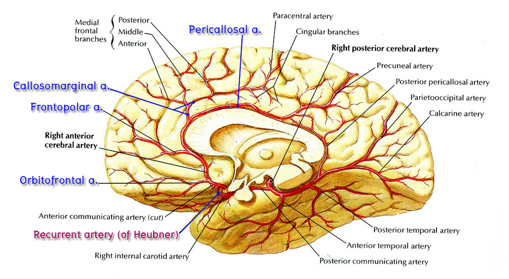

- Anterior cerebral artery (ACA)
ให้นักศึกษานำสมองแบบผ่าซีก (half brain) ที่ยังมีหลอดเลือดติดอยู่ มาศึกษา medial surface ของ cerebral hemisphere ซึ่งจะมีแขนงของ anterior cerebral artery ทอดอยู่ ชี้แสดงแขนงที่สำคัญบางแขนงดังนี้ (อาจไม่พบทุกแขนง ให้นักศึกษาชี้แสดงเท่าที่หาได้)

- Orbital branch ทอดไปวางที่ orbital gyri ของ frontal lobe
- Frontopolar branch ทอดไปทาง frontal pole
- Pericallosal branch วางอยู่ระหว่าง corpus callosum และ cingulate gyrus
- Callosomarginal branch ทอดไปตาม cingulate sulcus และอาจพบว่าให้แขนงไปเลี้ยง medial surface ของ frontal lobe และ parietal lobe จนสิ้นสุดที่ parieto-occipital sulcus